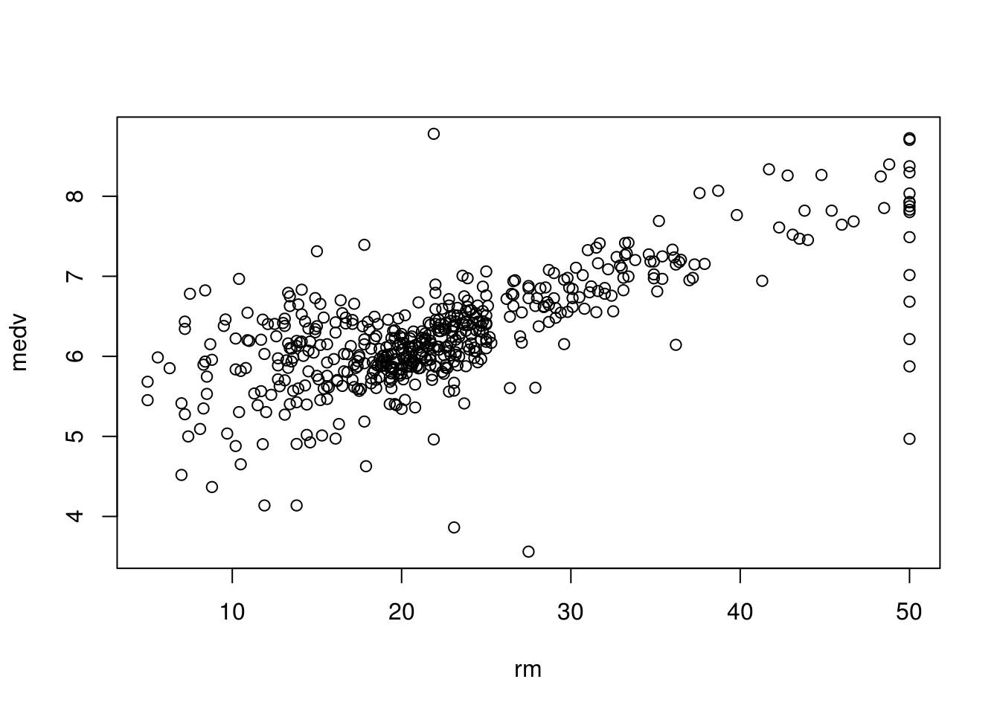
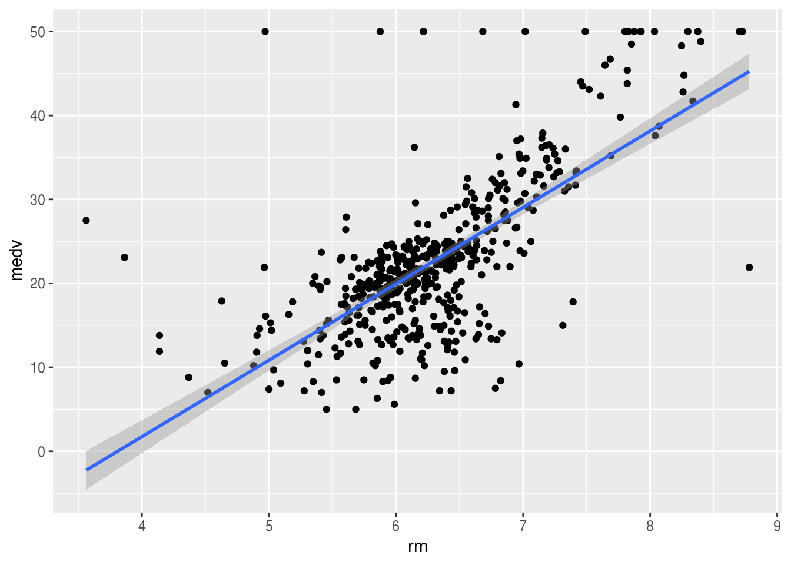
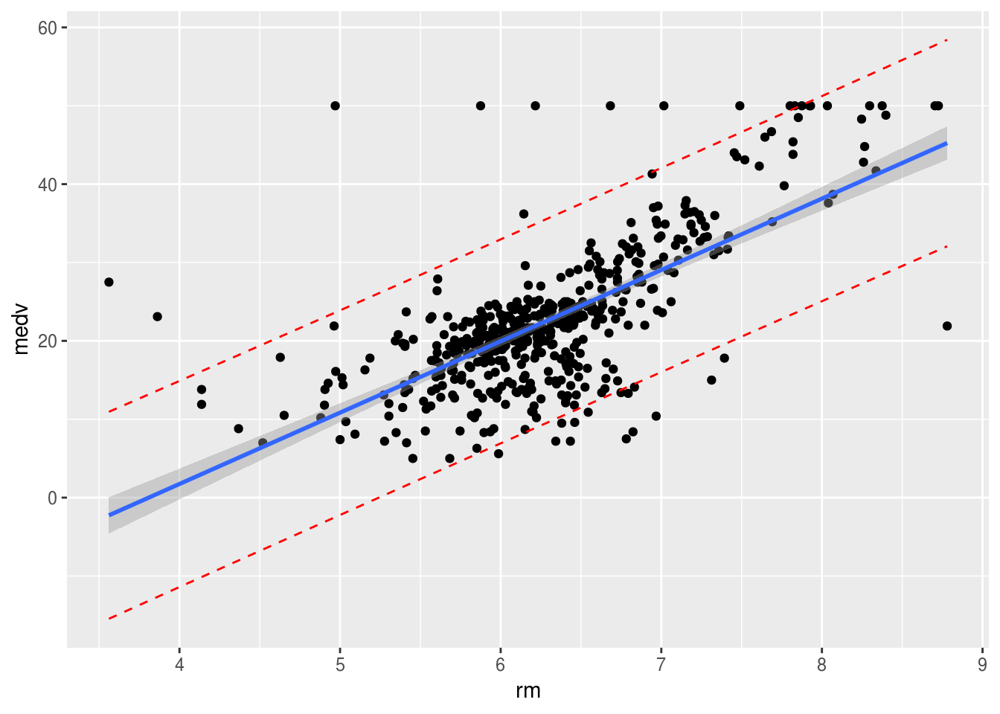
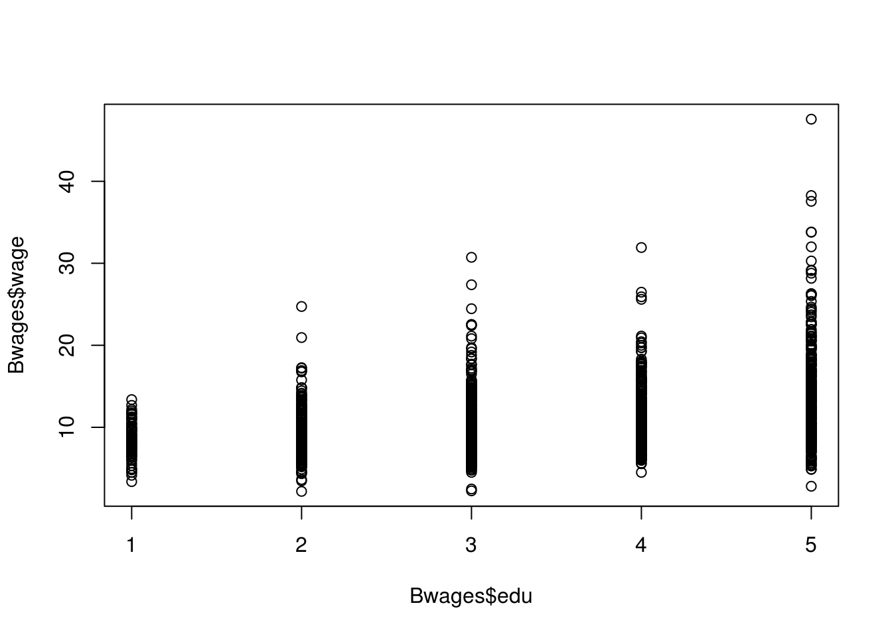
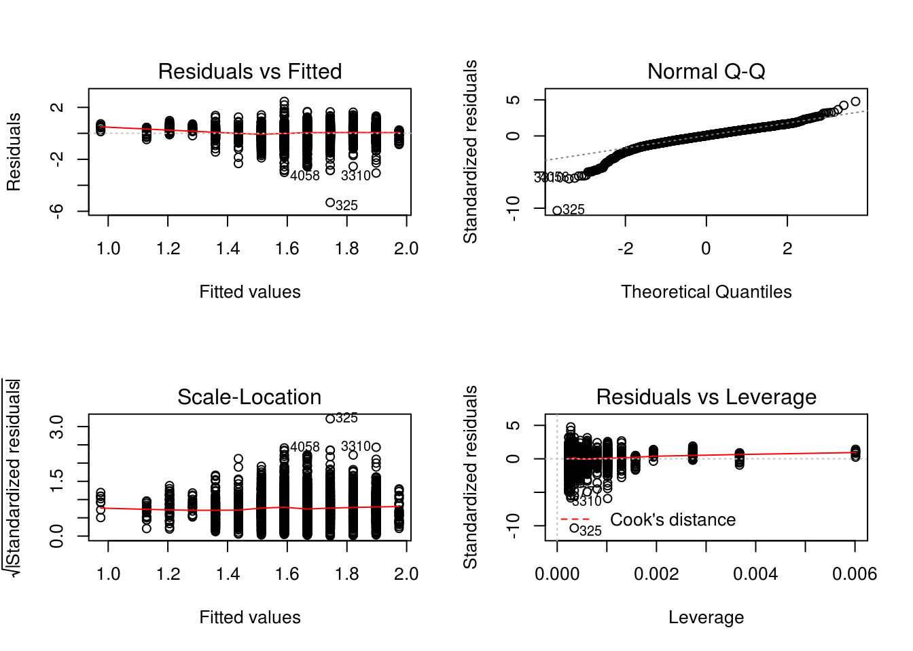
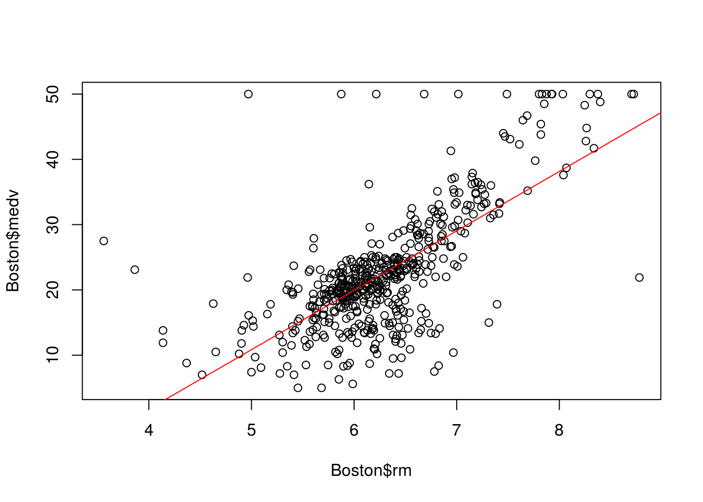
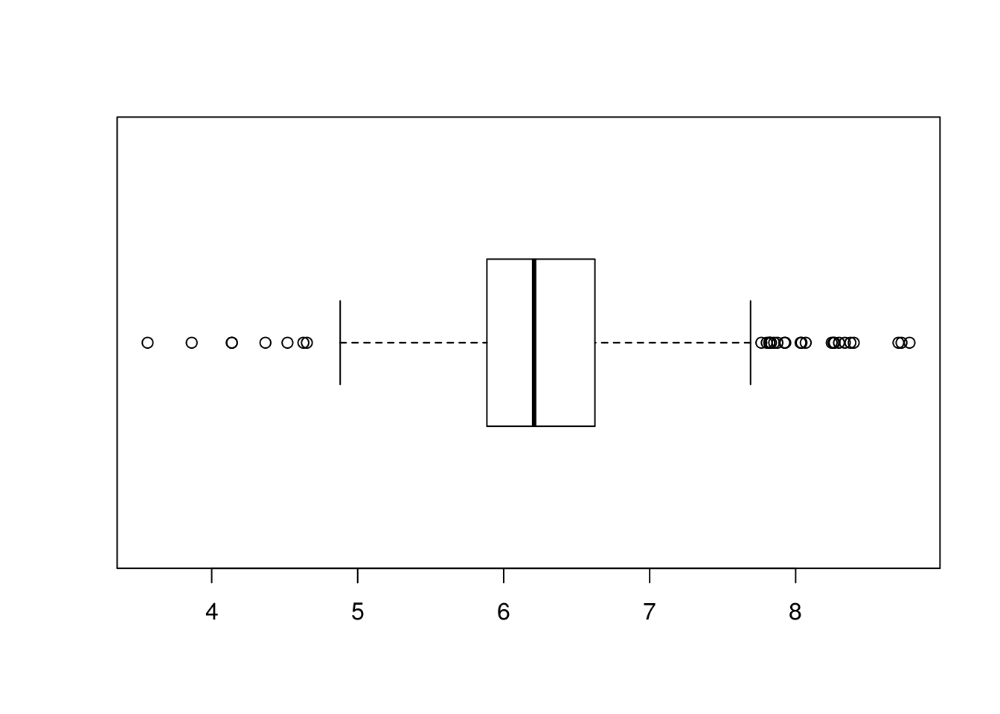
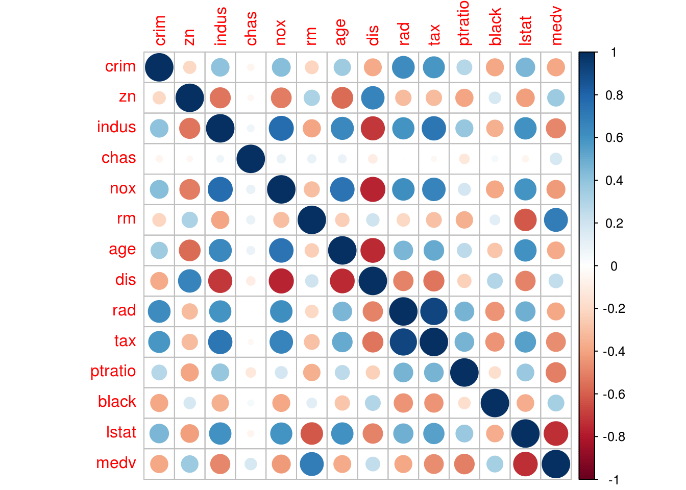
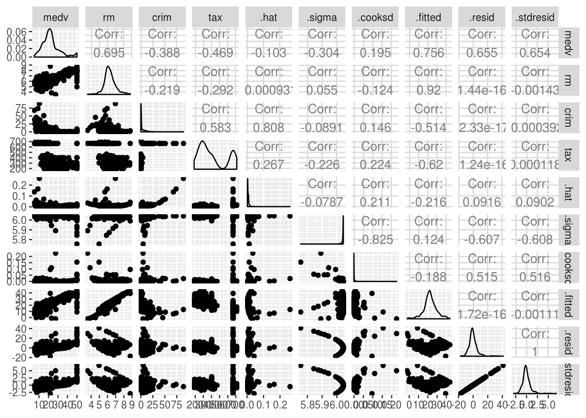
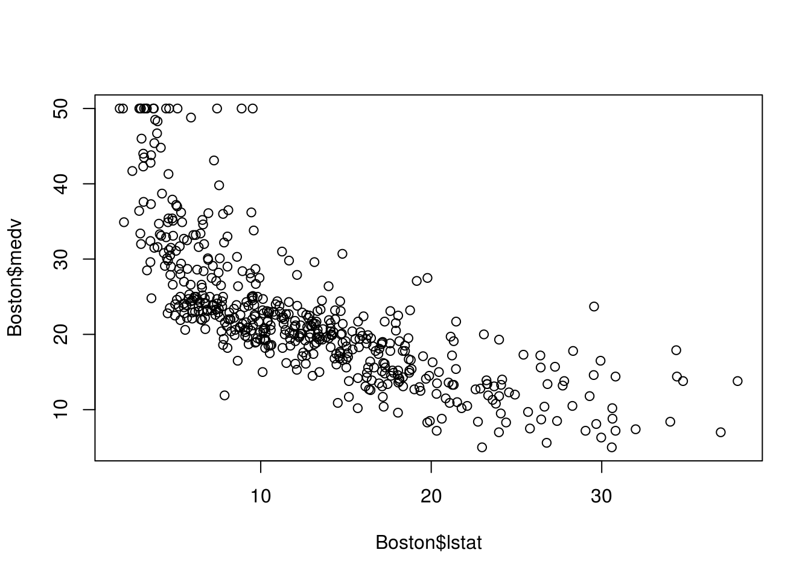

2 Linear Regression
2.1 Creating the Model
Linear regression is useful for studying the the effect of predictors (dependant variable, \(x\) values) to a reaction (independent variable, \(y\) value). This is called interference, the coefficient of each predictor will show the strength and direction of that predictor (how much of an effect it has and whether it is a positive or negative relationship). It may also be used for predicting the \(y\) for specified \(x\) values. It is of the form: \(y = \beta_0 + \beta_1 x_1 + \beta_2 x_2 + \ldots + \beta_n x_n + \epsilon\), where \(\beta_0\) is the intercept to the \(y\) axis, \(\beta_1\) to \(\beta_n\) are the coefficients, \(x\) are the predictors and \(\epsilon\) is some error. We gather a sample of data which we use to estimate our coefficients. The coefficients are estimated using the least squared method. We plot a line of the form \(y = \beta_0 + \beta_1 x_1 + \beta_2 x_2 + \ldots + \beta_n x_n + \epsilon\), that minimises the distance of our true \(y\) values for each \(x\) from the predicted by that line \(y\) (basically the line that is on average closer to each data point). That line represent the mean/expected value for each \(x\).
# We will create a linear model in this example
# Libraries
install.packages("MASS")
install.packages("ISLR")We will use the Boston dataset, it contains medv, a value for the mean house value and various other attributes such as rm rooms in the house and age of the house, we want to make a linear regression model that uses those values as predictors to predict the response, value of the house.
library(MASS)
library(ISLR)You can show the help page for the Boston dataset.
?BostonNot all the available attributes always make for good predictors. For example we might have something like the first name of the landlord which does not change the price as much. We say that those attributes will not have a significant coefficient; their coefficient will be close to zero.
To identify the predictors that can give us the best price prediction we can start by bringing in one by one our attributes and comparing performance (forward approach), or starting with all and removing one by one (backward), or even a mix.
# We will start with the first approach and analyse our model
# We are bringing in rm (rooms)
# This creates a linear model for medv as a function of rm
lm.rm_fit <- lm(medv~rm, data = Boston)
# This will give us the basic information of the model, such as the coefficient
# of our predictors and the intercept
summary(lm.rm_fit)##
## Call:
## lm(formula = medv ~ rm, data = Boston)
##
## Residuals:
## Min 1Q Median 3Q Max
## -23.346 -2.547 0.090 2.986 39.433
##
## Coefficients:
## Estimate Std. Error t value Pr(>|t|)
## (Intercept) -34.671 2.650 -13.08 <2e-16 ***
## rm 9.102 0.419 21.72 <2e-16 ***
## ---
## Signif. codes: 0 '***' 0.001 '**' 0.01 '*' 0.05 '.' 0.1 ' ' 1
##
## Residual standard error: 6.616 on 504 degrees of freedom
## Multiple R-squared: 0.4835, Adjusted R-squared: 0.4825
## F-statistic: 471.8 on 1 and 504 DF, p-value: < 2.2e-16We can see that rm is of high significance, it has a very small p-value (this means there is only a very small probability that the \(H_0\) (see the hypothesis testing chapter if you’re unfamiliar with the null hypothesis), rm has no effect on price is true). We also get the intercept and coefficient of the fit line so we can see that the approximated line is of the form: \(y = 9x - 35\).
2.2 R-squared
We can use the R-square value (coefficient of determination), as a performance indicator. It measures the percentage of variance of our points, that can be described by the regression line. To find that value we calculate the total variation not described by the line: by dividing a measure of the distance of our points to the line, to a measure of the distance of our points from the mean. The rest of the variation will be described by our model so we can simple take 1 minus the result. This basically will show how much better our model is from just predicting using the mean.
# We can get the measure of the disctance of our points to the line by
# calculating the sum of squared error.
# That is how far our points are from the line (how far the true y for each x is
# from estimated by the line y):
# Since we previously calculated our coefficients for the line we can use the
# following to get the y estimated by the line.
yForX <- function(x){
9 * x - 35
}
# (We could also use the built in function 'predict' but this makes it simpler
# for now.)
# The squared error would be their squared sum, where Boston$medv is the actual
# y.
SELine <- sum((Boston$medv - yForX(Boston$rm)) ^ 2)
SELine## [1] 22541.65# The measure of the distance of our points from the mean is given by the
# squared difference of each y from the mean of y.
meanOfY <- mean(Boston$medv)
SEy <- sum((Boston$medv - meanOfY) ^ 2)
SEy## [1] 42716.3# Now we can calculate the percentage of the total variation not described by
# our line.
DescribedByLine <- SELine / SEy
DescribedByLine## [1] 0.5277061# So the R-square, the percentage not described would be:
rSquared <- 1 - DescribedByLine
# We can easily extract this calculation with R using the following:
summary(lm.rm_fit)$r.squared## [1] 0.4835255If about \(40\%\) of the mean is described by the rm, the rest is various other predictors that we have not accounted for and the fact that the actual relation may not exactly be linear. This is described partially by (the irreducible error) where \(y\) (the house value) \(= f(x)\) (some function that described it) \(+ \epsilon\) (some random error).
# To check how linear the actual relation is we can plot the graph
plot(
Boston$medv,
Boston$rm,
xlab = "rm",
ylab = "medv"
)
# So if we bring more variable we expect this to increase
# This is a multi-variant regression which would like:
# y = b1*x1 + b2*x2 + b3*x3 ... + bn*xn + c
lm.fitAll <- lm(medv~., data = Boston)
# We can see that the model now described about 74% of the variation, using a
# couple more significant coefficients, such as crime in the area, taxes and so
# on.
summary(lm.fitAll)##
## Call:
## lm(formula = medv ~ ., data = Boston)
##
## Residuals:
## Min 1Q Median 3Q Max
## -15.595 -2.730 -0.518 1.777 26.199
##
## Coefficients:
## Estimate Std. Error t value Pr(>|t|)
## (Intercept) 3.646e+01 5.103e+00 7.144 3.28e-12 ***
## crim -1.080e-01 3.286e-02 -3.287 0.001087 **
## zn 4.642e-02 1.373e-02 3.382 0.000778 ***
## indus 2.056e-02 6.150e-02 0.334 0.738288
## chas 2.687e+00 8.616e-01 3.118 0.001925 **
## nox -1.777e+01 3.820e+00 -4.651 4.25e-06 ***
## rm 3.810e+00 4.179e-01 9.116 < 2e-16 ***
## age 6.922e-04 1.321e-02 0.052 0.958229
## dis -1.476e+00 1.995e-01 -7.398 6.01e-13 ***
## rad 3.060e-01 6.635e-02 4.613 5.07e-06 ***
## tax -1.233e-02 3.760e-03 -3.280 0.001112 **
## ptratio -9.527e-01 1.308e-01 -7.283 1.31e-12 ***
## black 9.312e-03 2.686e-03 3.467 0.000573 ***
## lstat -5.248e-01 5.072e-02 -10.347 < 2e-16 ***
## ---
## Signif. codes: 0 '***' 0.001 '**' 0.01 '*' 0.05 '.' 0.1 ' ' 1
##
## Residual standard error: 4.745 on 492 degrees of freedom
## Multiple R-squared: 0.7406, Adjusted R-squared: 0.7338
## F-statistic: 108.1 on 13 and 492 DF, p-value: < 2.2e-16We should note that a multivariate model is far superior than regressing each predictor with the price using individual models, since a change in price could be the result of other predictors or combinations of predictors. Separate models could result in inaccurate calculations of significant coefficients.
2.3 Confidence Intervals
They help us find a range within which the true regression line of the population would be.
This is because we have used a SAMPLE to approximate the true coefficients and draw our regression line. Doing that creates some error, our true mean is \(\pm\) that error, this is called the confidence interval. It is important to get the confidence interval for each of our estimated coefficients in order to determine how significant their true values are (how far from zero).
# The intercept and coefficient are approximated using a sample of nrow(Boston)
# samples. We cannot say that those values equal the true ones. There is an
# error in using a sample to draw conclusions, called the standard error. The
# true value would be our coefficient +/- the error, this is given by the
# confidence interval.
# In R we can get this by:
confint(lm.rm_fit)## 2.5 % 97.5 %
## (Intercept) -39.876641 -29.464601
## rm 8.278855 9.925363# Lets see how this is calculated for the coefficient of rm.
# First we need to calculate the residual standard error.
# (Residual means, what is left after we are done explaining the value of a
# point using our regression line, so the error.)
# It measures how far our actual values are from the regression line so it is
# given by: the square root of the sum of all the differences of the estimated y
# values to the actual y values squared, divided by total values minus 1, lets
# apply this:
standError <- sqrt(sum((yForX(Boston$rm) - Boston$medv) ^ 2) /
(nrow(Boston) - 1))
# We can see this value matches the one given by R on the summery statistics of
# our model.
standError## [1] 6.681088# In order to get the specific standard error due to the rm coefficient we need
# to divide by the difference due to x for rm.
xFory <- function(y){
(y + 35) / 9
}
# Given by this formula
COSE <- standError / (sqrt(sum((xFory(Boston$medv) - Boston$rm) ^ 2)))
# This matches the value calculated from R by:
coef(summary(lm.rm_fit))[, "Std. Error"]## (Intercept) rm
## 2.6498030 0.4190266# Knowing that we can construct a confidence interval, we will use a 97.5% to
# match the one used by R for the coefficient true value. This would be our
# value 9 +/- a critical value (driven by the confidence interval selected)
# multiplied by the standard error.
# We use a t value for our critical value since we do not know standard
# deviation, our error is an estimate, the t value can be found in a table, or
# using software. To find it we need to know the degrees of freedom (total rows
# -2) and our selected confidence interval.
t <- qt(0.975, df = nrow(Boston) - 2)
t## [1] 1.964682# So the confidence interval would be:
# get the calculated coefficient
coef <- as.numeric(summary(lm.rm_fit)$coefficients[2, 1])
coef## [1] 9.102109left <- coef + t * COSE
left## [1] 9.888954right <- coef - t * COSE
right## [1] 8.315264# Left and right matches the confidence intervals given by R
confint(lm.rm_fit)## 2.5 % 97.5 %
## (Intercept) -39.876641 -29.464601
## rm 8.278855 9.9253632.4 Prediction Intervals
Those are intervals for an INDIVIDUAL point, unlike confidence intervals that are used for the mean/expected value (of all \(y\)’s that have that \(x\)). It tries to answer, what is the particular value of \(y\) given some \(x\). They are useful when predicting a new \(y\), from given \(x\) values. They have wider range than confidence intervals. That is because not only do they depend on the mean error but also the individual random \(\epsilon\) error \(y = f(x) + \epsilon\).
# We can see that the prediction intervals are wider when comparing them in R
predict(lm.rm_fit, newdata = list(rm = 8), interval = "confidence")## fit lwr upr
## 1 38.14625 36.62041 39.67209predict(lm.rm_fit, newdata = list(rm = 8), interval = "prediction")## fit lwr upr
## 1 38.14625 25.05835 51.23415To calculate the prediction we use a similar approach to confidence intervals, however this time the error is both dependant on the standard error (variation of the mean) and the error of each individual point due to \(\epsilon\) (the fact that our model is not a perfect fit for the truth). in other words, our mean (expected value of \(y\) for an \(x\) given by the regression) is not accurate and our point is not guaranteed to be exactly the same as the mean), this error is given by adding those to up.
# We already have the standard error, so we can find the total error relevant to
# our specific x point given by SEpedY.
# We will use the example where rm = 8:
rooms <- as.numeric(Boston$rm)
SEpedY <- sqrt(standError ^ 2 * (1 + (1 / nrow(Boston)) +
((8 - mean(rooms)) ^ 2) / sum((rooms - mean(rooms)) ^ 2)))
SEpedY## [1] 6.72696# We can now get the prediction intervals for rm = 2 by:
PredictLeft <- yForX(8) - t * SEpedY
PredictLeft## [1] 23.78366PredictRight <- yForX(8) + t * SEpedY
PredictRight## [1] 50.21634Left and right matches the prediction intervals given by R
2.4.1 we can plot prediction and confidence intervals
install.packages("ggplot2")library(ggplot2)ggplot(Boston, aes(x = rm, y = medv)) +
geom_point() +
geom_smooth(method = lm, se = TRUE)
temp_var <- predict(lm.rm_fit, interval = "prediction")new_df <- cbind(Boston, temp_var)
ggplot(new_df, aes(rm, medv)) +
geom_point() +
geom_line(aes(y = lwr), color = "red", linetype = "dashed") +
geom_line(aes(y = upr), color = "red", linetype = "dashed") +
geom_smooth(method = lm, se = TRUE)
The shaded area shows where the true regression line of the population would be with a \(95\%\) confidence. The fact that it is wider on the ages just means that the standard error for the intercept is higher than that of the coefficient of our \(x\) (rm). If we imagine moving the line along the shaded area we notice that the intercept changes more than the slope. The line represents the mean values of \(y\) for every \(x\), however the particular \(x\) we are studying may not exactly fall into the mean. This is where the dotted red lines are useful. \(95\%\) of the values will fall within the dotted lines (prediction interval).
2.5 Heteroscedasticity
One important assumption we have taken when calculating confidence and prediction intervals is that the variance of the errors is constant (equal scatter of the data points). However the variance may change as the response (\(y\)) is changing. We have heteroscedasticity, when that change is systematic, follows a pattern. Typically, it produces a distinctive fan or cone shape in residual plots. It can also impact the accuracy of the coefficients.
# For this example we will use the cars dataset instead, as our data does not
# have clear indications of heteroscedasticity not enough variance to justify
# changes in data.
install.packages("Ecdat")library(Ecdat)
# Load our data set
data("Bwages", package = "Ecdat")?Bwageslm.het_fit <- lm(wage ~ school, data = Males)
# We can use the following visualizations
# Scatterplot
# We can see a cone shape which may indicate heteroscedasticity.
plot(Bwages$edu, Bwages$wage)
# Residuals/fitted is of interest
par(mfrow = c(2, 2))
plot(lm.het_fit)
# It indicates heteroscedasticity, as there is a curve, the X values do not look
# random.# Breusch-Pagan test for a more algorithmic approach
install.packages("lmtest")library(lmtest)## Loading required package: zoo##
## Attaching package: 'zoo'## The following objects are masked from 'package:base':
##
## as.Date, as.Date.numeric# p value is very small so we can reject the H0, there is heteroscedasticity
bptest(lm.het_fit)##
## studentized Breusch-Pagan test
##
## data: lm.het_fit
## BP = 4.3708, df = 1, p-value = 0.03656So what do we do? We can try and identify why this is happening, why the variance increase with the education and include this change in our model in order to optimise it.
From domain knowledge we can say that individuals with higher education, have more choice in what to do. For example they may prioritise making money or having a more relaxed job. So we can calculate the rate at which it increases and add this as a coefficient of x that describes the variance: for \(y_i = \beta_0 + \beta_1x_i + \epsilon_i\) (where \(\epsilon_i\) is the error) \(Var(\epsilon_i|x_i) = \sigma^2 \times kx_i\), and not just the standard deviation \(\sigma^2\), this is called weighted regression/least squares WLS. The difference in WLS from OLS (ordinary least squares) is that how much a point can affect the position of the best fit line is not equal, it is dependant on the variance associated with the particular \(x\) if it is a point of high variance it will affect the line less, if it is of low variance it will have a greater affect. As a result we get a better model.
Other approaches where the heteroscedasticity is less systematic we can try data transformations such as \(\log\), or \(\sqrt{}\) or even a Box-Cox transformation. However, we have to keep in mind how this affects our original model.
2.6 Outliers
Points that are far from the predicted \(y\) values (maybe due to errors in taking the measurements or very extreme/special cases) they may not always massively affect the best fit line, however they could have a significant effect in the calculations of errors because they are very far from the predicted \(y\), the R-squared value would decrease if we had more information about the data and how it was gathered, or maybe additional domain knowledge to interpret the outcomes, we could potentially just remove them or adjust them towards the mean.
# We can see a few of them in the plot
plot(Boston$rm, Boston$medv)
abline(lm.rm_fit, col = "red")
# Simple way to find outliers on a set of a single variable is the univariate
# approach.
# Outliers are defined as values below or above 1.5*IQR (Inter Quartile Range =
# Q3 - Q1).
# We can visualise that in a boxplot where everything out of the whiskers is
# treated as an outlier.
boxplot(Boston$rm, horizontal = TRUE)
# We can list them using the following code
outlier_values <- boxplot.stats(Boston$rm)$outThere are also a few multi-variant approaches in defining outliers. For example the Cooks Distance which measures the influence of a row on the sample to the line. In general, points that have about 4 times the mean may be classified as influential. Those are also called leverage points, they may not affect the R-square value as much as other outlier but affect the fit of the regression line.
# We can calculate them in R using the following code, for 2 or more variables
cooksd <- cooks.distance(lm.rm_fit)
influential <- as.numeric(names(cooksd)[(cooksd > 4 * mean(cooksd, na.rm = T))])
BostonSubSet <- c(Boston$rm, Boston$medv)
BostonSubSet[influential]## [1] 7.489 7.802 8.375 7.929 7.831 7.875 7.853 8.034 7.686 8.297 7.923
## [12] 8.780 3.561 3.863 4.970 6.683 7.016 6.216 5.875 4.138 7.313 6.968
## [23] 4.138 4.628 7.3932.7 Multicollinearity
When dealing with multivariate regression, some of the values may describe each other. For example, if in our case we were to add house condition and house age as two separate factors, we might find that there is some relation between age and condition (we are unsure how strong that relation is), but in some cases we might need to consider whether or not we should include both the two (or three or more) variables in our regression. This could have a negative affect on the stability of our results. There will be issues in identifying the effect of each individual predictor, and changes in \(x\) would result in greater (than the true) changes in \(y\) since the same effect is now accounted in multiple predictors.
2.7.1 Correlation
# We can first look at some bivariate approaches (measuring the correlation of
# each pair of two predictors) the correlation factor is a simple way of doing
# this, a value from -1 to 1 showing direction and strength of the relationship.
?cor# Identical so cor = 1, positive linear relationship
cor(1:5, 1:5)## [1] 1# Negative cor = -1
cor(1:5, 5:1)## [1] -1# Less correlation cor < 1
cor(1:5, c(1, 2, 3, 4, 4))## [1] 0.9701425# Lets use the example of tax and criminal activity
# Variables need to be numerical to be compared
typeof(Boston$crim)## [1] "double"typeof(Boston$tax)## [1] "double"cor(Boston$crim, Boston$tax)## [1] 0.5827643# This is calculated using the following formula
x <- Boston$crim
y <- Boston$tax
meanX <- mean(x)
meanY <- mean(y)
nominator <- sum((x - meanX) * (y - meanY))
denominator <- sum((x - meanX) ^ 2) * sum((y - meanY) ^ 2)
r <- nominator / sqrt(denominator)
# We can see this matches exactly with the value given by cor() function
r## [1] 0.5827643# A few things to note about the formula:
# The equation is bound by 1
# If there is a positive correlation where xi > meanX and yi > meanY then, form
# the formula we can see that we will have some positive outcome, the other way
# around we will get a negative value. If there is no relationship, the x is not
# described by the y then the sum of (x - meanX) will approximately cancel out
# with the sum of (y - meanY) and we will get a very small value.2.7.2 Sample Correlation Coefficient to True Value
# We have calculated a the correlation coefficient of a sample, we need to test
# if that is enough evidence to prove that the true correlation coefficient is
# far from zero (Ha).
# In R we can easily complete a two tail test on our Hypothesis
cor.test(Boston$crim, Boston$tax)##
## Pearson's product-moment correlation
##
## data: Boston$crim and Boston$tax
## t = 16.099, df = 504, p-value < 2.2e-16
## alternative hypothesis: true correlation is not equal to 0
## 95 percent confidence interval:
## 0.5221186 0.6375464
## sample estimates:
## cor
## 0.5827643# What the cor.test does is it calculates a p-value for the cor coefficient we
# have just calculated, to show what would the probability of getting such a
# number at random (if the H0 was true and there is no correlation) if that
# probability is very small usually less than 0.05 we can reject the H0.
# We can calculate it using the following steps (see project hypothesis testing
# for the theory):
t <- (r * sqrt(nrow(Boston) - 2)) / sqrt(1 - r ^ 2)
# Area > t and Area < t
p <- pt(q = t / 2, df = (nrow(Boston) - 1), lower.tail = FALSE) +
pt(q = -t / 2, df = (nrow(Boston) - 1), lower.tail = TRUE)2.7.3 Correlation Matrix
# To get the complete correlation matrix for (all the pairs)
cor(Boston)## crim zn indus chas nox
## crim 1.00000000 -0.20046922 0.40658341 -0.055891582 0.42097171
## zn -0.20046922 1.00000000 -0.53382819 -0.042696719 -0.51660371
## indus 0.40658341 -0.53382819 1.00000000 0.062938027 0.76365145
## chas -0.05589158 -0.04269672 0.06293803 1.000000000 0.09120281
## nox 0.42097171 -0.51660371 0.76365145 0.091202807 1.00000000
## rm -0.21924670 0.31199059 -0.39167585 0.091251225 -0.30218819
## age 0.35273425 -0.56953734 0.64477851 0.086517774 0.73147010
## dis -0.37967009 0.66440822 -0.70802699 -0.099175780 -0.76923011
## rad 0.62550515 -0.31194783 0.59512927 -0.007368241 0.61144056
## tax 0.58276431 -0.31456332 0.72076018 -0.035586518 0.66802320
## ptratio 0.28994558 -0.39167855 0.38324756 -0.121515174 0.18893268
## black -0.38506394 0.17552032 -0.35697654 0.048788485 -0.38005064
## lstat 0.45562148 -0.41299457 0.60379972 -0.053929298 0.59087892
## medv -0.38830461 0.36044534 -0.48372516 0.175260177 -0.42732077
## rm age dis rad tax
## crim -0.21924670 0.35273425 -0.37967009 0.625505145 0.58276431
## zn 0.31199059 -0.56953734 0.66440822 -0.311947826 -0.31456332
## indus -0.39167585 0.64477851 -0.70802699 0.595129275 0.72076018
## chas 0.09125123 0.08651777 -0.09917578 -0.007368241 -0.03558652
## nox -0.30218819 0.73147010 -0.76923011 0.611440563 0.66802320
## rm 1.00000000 -0.24026493 0.20524621 -0.209846668 -0.29204783
## age -0.24026493 1.00000000 -0.74788054 0.456022452 0.50645559
## dis 0.20524621 -0.74788054 1.00000000 -0.494587930 -0.53443158
## rad -0.20984667 0.45602245 -0.49458793 1.000000000 0.91022819
## tax -0.29204783 0.50645559 -0.53443158 0.910228189 1.00000000
## ptratio -0.35550149 0.26151501 -0.23247054 0.464741179 0.46085304
## black 0.12806864 -0.27353398 0.29151167 -0.444412816 -0.44180801
## lstat -0.61380827 0.60233853 -0.49699583 0.488676335 0.54399341
## medv 0.69535995 -0.37695457 0.24992873 -0.381626231 -0.46853593
## ptratio black lstat medv
## crim 0.2899456 -0.38506394 0.4556215 -0.3883046
## zn -0.3916785 0.17552032 -0.4129946 0.3604453
## indus 0.3832476 -0.35697654 0.6037997 -0.4837252
## chas -0.1215152 0.04878848 -0.0539293 0.1752602
## nox 0.1889327 -0.38005064 0.5908789 -0.4273208
## rm -0.3555015 0.12806864 -0.6138083 0.6953599
## age 0.2615150 -0.27353398 0.6023385 -0.3769546
## dis -0.2324705 0.29151167 -0.4969958 0.2499287
## rad 0.4647412 -0.44441282 0.4886763 -0.3816262
## tax 0.4608530 -0.44180801 0.5439934 -0.4685359
## ptratio 1.0000000 -0.17738330 0.3740443 -0.5077867
## black -0.1773833 1.00000000 -0.3660869 0.3334608
## lstat 0.3740443 -0.36608690 1.0000000 -0.7376627
## medv -0.5077867 0.33346082 -0.7376627 1.0000000# To visualize thisinstall.packages("corrplot")library(corrplot)## corrplot 0.84 loadedcorrplot(cor(Boston))
# We can also see each scatter plot using the following:
# We will study correlation between the following predictors, to not overflow
# the graphs.
lm.fitMultivariet <- lm(medv~ rm + crim + tax + crim, data = Boston)install.packages("GGally")library(GGally)
ggpairs(lm.fitMultivariet)
2.7.4 Variance Inflation
Scatterplots and correlation matrixes are useful, however they only look at the relations between pairs (bi-variate), we can use variance inflation VIF to account for interaction within multiple attributes.
The idea here is to find whether a combination of predictors can describe another predictor \(x_i\), to find that we can run a regression line for each \(x_i\), \(x_i = d_0 + d_1x_{2i} + d_2x_{3i} \ldots\) , where \(x_{2i}\), \(x_{3i} \ldots\) are the rest of the predictors. We can then asses the fitness of that line using the R-squared value. If the line is a good fit then that predictor is well described by the rest of the predictors and we have multicollinearity.
# Lets take the example of tax
# First we regress the tax as a function of the rest of the predictors
lm.tax <- lm(tax~ . - medv, data = Boston)
# We can then get the r squared
Rsquared <- summary(lm.tax)$r.squared
# The variance inflation value is given by the following equation, where if VIF
# is large, usually greater than 5, we can say there is multicollinearity
# present.
VIF <- 1 / (1 - Rsquared)
# We can see that in this case the VIF is quite large, this is explained by the
# fact that predictors that are location related ones, rooms and house age, how
# green the area is, criminal activity, surrounding population social/economical
# statues and so on, that are used for predicting house price are also ideal for
# predicting tax.
VIF## [1] 9.008554# Last we can get the VIF values in R using the following code
install.packages("car")library(car)## Loading required package: carData##
## Attaching package: 'carData'## The following object is masked from 'package:Ecdat':
##
## Mrozvif(lm.fitAll)## crim zn indus chas nox rm age dis
## 1.792192 2.298758 3.991596 1.073995 4.393720 1.933744 3.100826 3.955945
## rad tax ptratio black lstat
## 7.484496 9.008554 1.799084 1.348521 2.941491# Lets see what happens to our original line if we remove tax
lm.fitAllMinusTax <- update(lm.fitAll, ~ . - tax)
summary(lm.fitAll)$r.squared## [1] 0.7406427summary(lm.fitAllMinusTax)$r.squared## [1] 0.7349714The R-squared has slightly gone down. However, tax is a result of factors that we have accounted (e.g location) a change in those factors would affect tax, and price would be affected both by the change in tax (which is only the result of the original change) and by the original change, multiplying its affects and ‘inflating’ the true price value. For example a change is the location of the house would result in an increase in the tax and therefore an increase in the price greater than the true. What would be interesting to do is find out why we are loosing some fitness when we remove the tax, as seen for the R-squared. Are there other factors describing the tax, that we have not included? Could we use them for the price prediction instead of tax?
Statistically, we can find out if the change in a restricted model (where a variable is removed, in this case a model without tax) is significant using the F-statistic.
# First we would calculate the SSR (regression sum of squared errors) for the
# unrestricted and restricted model.
summary(lm.fitAll)##
## Call:
## lm(formula = medv ~ ., data = Boston)
##
## Residuals:
## Min 1Q Median 3Q Max
## -15.595 -2.730 -0.518 1.777 26.199
##
## Coefficients:
## Estimate Std. Error t value Pr(>|t|)
## (Intercept) 3.646e+01 5.103e+00 7.144 3.28e-12 ***
## crim -1.080e-01 3.286e-02 -3.287 0.001087 **
## zn 4.642e-02 1.373e-02 3.382 0.000778 ***
## indus 2.056e-02 6.150e-02 0.334 0.738288
## chas 2.687e+00 8.616e-01 3.118 0.001925 **
## nox -1.777e+01 3.820e+00 -4.651 4.25e-06 ***
## rm 3.810e+00 4.179e-01 9.116 < 2e-16 ***
## age 6.922e-04 1.321e-02 0.052 0.958229
## dis -1.476e+00 1.995e-01 -7.398 6.01e-13 ***
## rad 3.060e-01 6.635e-02 4.613 5.07e-06 ***
## tax -1.233e-02 3.760e-03 -3.280 0.001112 **
## ptratio -9.527e-01 1.308e-01 -7.283 1.31e-12 ***
## black 9.312e-03 2.686e-03 3.467 0.000573 ***
## lstat -5.248e-01 5.072e-02 -10.347 < 2e-16 ***
## ---
## Signif. codes: 0 '***' 0.001 '**' 0.01 '*' 0.05 '.' 0.1 ' ' 1
##
## Residual standard error: 4.745 on 492 degrees of freedom
## Multiple R-squared: 0.7406, Adjusted R-squared: 0.7338
## F-statistic: 108.1 on 13 and 492 DF, p-value: < 2.2e-16SSRun <- anova(lm.fitAll)["Residuals", "Sum Sq"]
SSRre <- anova(lm.fitAllMinusTax)["Residuals", " Sum Sq"]
# The f stat is given by:
n <- nrow(Boston)
p <- length(Boston)
Fstat <- ((SSRre - SSRun) / p) / (SSRun / (n - p - 1))
# From the f distribution we can find a critical value that represents the point
# separating the curve to the rejection area of a = 0.05 like we do with t
# distribution (see hypothesis testing repo).
Fcrit <- qf(.95, p, n - p - 1)
# The Fstat falls under the rejection area and so we can accept the H0, removing
# the tax does produce a significant change.
# We can do this in r simply using the following code.
anova(lm.fitAll, lm.fitAllMinusTax)## Analysis of Variance Table
##
## Model 1: medv ~ crim + zn + indus + chas + nox + rm + age + dis + rad +
## tax + ptratio + black + lstat
## Model 2: medv ~ crim + zn + indus + chas + nox + rm + age + dis + rad +
## ptratio + black + lstat
## Res.Df RSS Df Sum of Sq F Pr(>F)
## 1 492 11079
## 2 493 11321 -1 -242.26 10.758 0.001112 **
## ---
## Signif. codes: 0 '***' 0.001 '**' 0.01 '*' 0.05 '.' 0.1 ' ' 12.8 Interaction terms
Interaction terms just refers to the effect that certain combinations of predictors can have on the \(y\). Sometimes we can optimise our regression model by accounting for the effect of predictor combinations, we can add their products multiplied by a coefficient that shows the effect of the combination (\(y = \beta_0 + \beta_1 x_1 + \beta_2 x_2 + \beta_3x_1x_2 + \epsilon\)). A good example of where this is useful is the synergy effect, studied when analysing the effects of advertising using different means (TV, web, radio, …). It was found that it was most effective to spread the advertising budget across multiple means, rather than focusing it on the most profitable one. To measure such affects, interaction terms are necessary.
# Simple way to do this in R for interaction of crim and tax
lm.simpleInteraction <- lm(medv~ crim + tax + crim * tax, data = Boston)
# We get the coefficient of the interaction and its significance the same way we
# get any other coefficient.
summary(lm.simpleInteraction)##
## Call:
## lm(formula = medv ~ crim + tax + crim * tax, data = Boston)
##
## Residuals:
## Min 1Q Median 3Q Max
## -14.553 -4.704 -2.180 2.928 33.470
##
## Coefficients:
## Estimate Std. Error t value Pr(>|t|)
## (Intercept) 32.319598 1.097800 29.440 < 2e-16 ***
## crim -3.942555 1.534637 -2.569 0.0105 *
## tax -0.021070 0.002633 -8.002 8.57e-15 ***
## crim:tax 0.005634 0.002301 2.449 0.0147 *
## ---
## Signif. codes: 0 '***' 0.001 '**' 0.01 '*' 0.05 '.' 0.1 ' ' 1
##
## Residual standard error: 7.996 on 502 degrees of freedom
## Multiple R-squared: 0.2486, Adjusted R-squared: 0.2441
## F-statistic: 55.37 on 3 and 502 DF, p-value: < 2.2e-16# Easier way to write the above
lm.simpleInteraction2 <- lm(medv~crim * tax, data = Boston)
summary(lm.simpleInteraction2)##
## Call:
## lm(formula = medv ~ crim * tax, data = Boston)
##
## Residuals:
## Min 1Q Median 3Q Max
## -14.553 -4.704 -2.180 2.928 33.470
##
## Coefficients:
## Estimate Std. Error t value Pr(>|t|)
## (Intercept) 32.319598 1.097800 29.440 < 2e-16 ***
## crim -3.942555 1.534637 -2.569 0.0105 *
## tax -0.021070 0.002633 -8.002 8.57e-15 ***
## crim:tax 0.005634 0.002301 2.449 0.0147 *
## ---
## Signif. codes: 0 '***' 0.001 '**' 0.01 '*' 0.05 '.' 0.1 ' ' 1
##
## Residual standard error: 7.996 on 502 degrees of freedom
## Multiple R-squared: 0.2486, Adjusted R-squared: 0.2441
## F-statistic: 55.37 on 3 and 502 DF, p-value: < 2.2e-16# This returns all two-way interactions
lm.allPairsInteractions <- lm(medv~ . * ., data = Boston)
# We can see that the R-squared when using the 2-way interactions has increased.
summary(lm.allPairsInteractions)##
## Call:
## lm(formula = medv ~ . * ., data = Boston)
##
## Residuals:
## Min 1Q Median 3Q Max
## -7.9374 -1.5344 -0.1068 1.2973 17.8500
##
## Coefficients:
## Estimate Std. Error t value Pr(>|t|)
## (Intercept) -1.579e+02 6.800e+01 -2.323 0.020683 *
## crim -1.707e+01 6.554e+00 -2.605 0.009526 **
## zn -7.529e-02 4.580e-01 -0.164 0.869508
## indus -2.819e+00 1.696e+00 -1.663 0.097111 .
## chas 4.451e+01 1.952e+01 2.280 0.023123 *
## nox 2.006e+01 7.516e+01 0.267 0.789717
## rm 2.527e+01 5.699e+00 4.435 1.18e-05 ***
## age 1.263e+00 2.728e-01 4.630 4.90e-06 ***
## dis -1.698e+00 4.604e+00 -0.369 0.712395
## rad 1.861e+00 2.464e+00 0.755 0.450532
## tax 3.670e-02 1.440e-01 0.255 0.798978
## ptratio 2.725e+00 2.850e+00 0.956 0.339567
## black 9.942e-02 7.468e-02 1.331 0.183833
## lstat 1.656e+00 8.533e-01 1.940 0.053032 .
## crim:zn 4.144e-01 1.804e-01 2.297 0.022128 *
## crim:indus -4.693e-02 4.480e-01 -0.105 0.916621
## crim:chas 2.428e+00 5.710e-01 4.251 2.63e-05 ***
## crim:nox -1.108e+00 9.285e-01 -1.193 0.233425
## crim:rm 2.163e-01 4.907e-02 4.409 1.33e-05 ***
## crim:age -3.083e-03 3.781e-03 -0.815 0.415315
## crim:dis -1.903e-01 1.060e-01 -1.795 0.073307 .
## crim:rad -6.584e-01 5.815e-01 -1.132 0.258198
## crim:tax 3.479e-02 4.287e-02 0.812 0.417453
## crim:ptratio 4.915e-01 3.328e-01 1.477 0.140476
## crim:black -4.612e-04 1.793e-04 -2.572 0.010451 *
## crim:lstat 2.964e-02 6.544e-03 4.530 7.72e-06 ***
## zn:indus -6.731e-04 4.651e-03 -0.145 0.885000
## zn:chas -5.230e-02 6.450e-02 -0.811 0.417900
## zn:nox 1.998e-03 4.721e-01 0.004 0.996625
## zn:rm -7.286e-04 2.602e-02 -0.028 0.977672
## zn:age -1.249e-06 8.514e-04 -0.001 0.998830
## zn:dis 1.097e-02 7.550e-03 1.452 0.147121
## zn:rad -3.200e-03 6.975e-03 -0.459 0.646591
## zn:tax 3.937e-04 1.783e-04 2.209 0.027744 *
## zn:ptratio -4.578e-03 7.015e-03 -0.653 0.514325
## zn:black 1.159e-04 7.599e-04 0.153 0.878841
## zn:lstat -1.064e-02 4.662e-03 -2.281 0.023040 *
## indus:chas -3.672e-01 3.780e-01 -0.971 0.331881
## indus:nox 3.138e+00 1.449e+00 2.166 0.030855 *
## indus:rm 3.301e-01 1.327e-01 2.488 0.013257 *
## indus:age -4.865e-04 3.659e-03 -0.133 0.894284
## indus:dis -4.486e-02 6.312e-02 -0.711 0.477645
## indus:rad -2.089e-02 5.020e-02 -0.416 0.677560
## indus:tax 3.129e-04 6.034e-04 0.519 0.604322
## indus:ptratio -6.011e-02 3.783e-02 -1.589 0.112820
## indus:black 1.122e-03 2.034e-03 0.552 0.581464
## indus:lstat 5.063e-03 1.523e-02 0.332 0.739789
## chas:nox -3.272e+01 1.243e+01 -2.631 0.008820 **
## chas:rm -5.384e+00 1.150e+00 -4.681 3.87e-06 ***
## chas:age 3.040e-02 5.840e-02 0.521 0.602982
## chas:dis 9.022e-01 1.334e+00 0.676 0.499143
## chas:rad -7.773e-01 5.707e-01 -1.362 0.173907
## chas:tax 4.627e-02 3.645e-02 1.270 0.204930
## chas:ptratio -6.145e-01 6.914e-01 -0.889 0.374604
## chas:black 2.500e-02 1.567e-02 1.595 0.111423
## chas:lstat -2.980e-01 1.845e-01 -1.615 0.107008
## nox:rm 5.990e+00 5.468e+00 1.095 0.273952
## nox:age -7.273e-01 2.340e-01 -3.108 0.002012 **
## nox:dis 5.694e+00 3.723e+00 1.529 0.126969
## nox:rad -1.994e-01 1.897e+00 -0.105 0.916360
## nox:tax -2.793e-02 1.312e-01 -0.213 0.831559
## nox:ptratio -3.669e+00 3.096e+00 -1.185 0.236648
## nox:black -1.854e-02 3.615e-02 -0.513 0.608298
## nox:lstat 1.119e+00 6.511e-01 1.719 0.086304 .
## rm:age -6.277e-02 2.203e-02 -2.849 0.004606 **
## rm:dis 3.190e-01 3.295e-01 0.968 0.333516
## rm:rad -8.422e-02 1.527e-01 -0.552 0.581565
## rm:tax -2.242e-02 9.910e-03 -2.262 0.024216 *
## rm:ptratio -4.880e-01 2.172e-01 -2.247 0.025189 *
## rm:black -4.528e-03 3.351e-03 -1.351 0.177386
## rm:lstat -2.968e-01 4.316e-02 -6.878 2.24e-11 ***
## age:dis -1.678e-02 8.882e-03 -1.889 0.059589 .
## age:rad 1.442e-02 4.212e-03 3.423 0.000682 ***
## age:tax -3.403e-04 2.187e-04 -1.556 0.120437
## age:ptratio -7.520e-03 6.793e-03 -1.107 0.268946
## age:black -7.029e-04 2.136e-04 -3.291 0.001083 **
## age:lstat -6.023e-03 1.936e-03 -3.111 0.001991 **
## dis:rad -5.580e-02 7.075e-02 -0.789 0.430678
## dis:tax -3.882e-03 2.496e-03 -1.555 0.120623
## dis:ptratio -4.786e-02 9.983e-02 -0.479 0.631920
## dis:black -5.194e-03 5.541e-03 -0.937 0.349116
## dis:lstat 1.350e-01 4.866e-02 2.775 0.005774 **
## rad:tax 3.131e-05 1.446e-03 0.022 0.982729
## rad:ptratio -4.379e-02 8.392e-02 -0.522 0.602121
## rad:black -4.362e-04 2.518e-03 -0.173 0.862561
## rad:lstat -2.529e-02 1.816e-02 -1.392 0.164530
## tax:ptratio 7.854e-03 2.504e-03 3.137 0.001830 **
## tax:black -4.785e-07 1.999e-04 -0.002 0.998091
## tax:lstat -1.403e-03 1.208e-03 -1.162 0.245940
## ptratio:black 1.203e-03 3.361e-03 0.358 0.720508
## ptratio:lstat 3.901e-03 2.985e-02 0.131 0.896068
## black:lstat -6.118e-04 4.157e-04 -1.472 0.141837
## ---
## Signif. codes: 0 '***' 0.001 '**' 0.01 '*' 0.05 '.' 0.1 ' ' 1
##
## Residual standard error: 2.852 on 414 degrees of freedom
## Multiple R-squared: 0.9212, Adjusted R-squared: 0.9039
## F-statistic: 53.18 on 91 and 414 DF, p-value: < 2.2e-16Lets try and explain some of the significant interactions found:
- Combination of chas (close to river) and nox (greenery), that combination may indicate that the house is build in a very scenic area and therefore more expensive.
- crim (criminal activity) and lstat (\(\%\) lower status of population) may indicate how degraded an area is and therefore less expensive
- rm (room per dwelling) and age, that combination may explain a lot of the variance in our dataset since, most recent houses tend to have less space yet are more expensive due to modern equipment and built.
We need to consider which interactions are more significant and make the most sense from domain knowledge. Also keep in mind that we need to sustain an efficient and realistic model, not just a model with a very good R-squared value.
2.9 Non-linear Transformations of Predictors
A common optimisation technique when dealing with linear regression is polynomial transformation of some the predictor (e.g \(y = \beta_0 + \beta_1x + \beta_2x^2 + \epsilon\)). This is polynomial regression, and is still a linear model. This is useful since often a relationship between variables is non linear, and this may be realised using scatterplots.
# Lets use the example of lstat and medv
plot(Boston$lstat, Boston$medv)
# We can see that the scatterplot follows a curve, which indicates that
# polynomials would be effective.
# Lets compare the two:
lm.linearRegression <- lm(medv~ lstat, data = Boston)
lm.PolynomialRegression <- lm(medv~ lstat + I(lstat ^ 2), data = Boston)
anova(lm.linearRegression, lm.PolynomialRegression)## Analysis of Variance Table
##
## Model 1: medv ~ lstat
## Model 2: medv ~ lstat + I(lstat^2)
## Res.Df RSS Df Sum of Sq F Pr(>F)
## 1 504 19472
## 2 503 15347 1 4125.1 135.2 < 2.2e-16 ***
## ---
## Signif. codes: 0 '***' 0.001 '**' 0.01 '*' 0.05 '.' 0.1 ' ' 1# The anova tested the H0 where the models both fit the data equally(as
# explained above). The F-statistic associated produced a very small providing
# enough evidence to reject the H0.
# We can visualise this:
newdat <- data.frame(lstat = seq(min(Boston$lstat),
max(Boston$lstat),
length.out = 100))
newdat$pred <- predict(lm.PolynomialRegression, newdata = newdat)
plot(medv ~ lstat, data = Boston)
with(newdat, lines(x = lstat, y = pred))
abline(lm(medv~ lstat, data = Boston), col = "red")
# It is clear from the graph that the black line fits the data much better2.10 Qualitative Predictors
Up until now we have dealt with numbers; what if one of our predictors was qualitative (e.g. sex, colour, level of satisfaction)? To use such a variable in LR we have to assign a dummy number/factor/enumeration, just some sort of number that will always be associated with one particular response (e.g female \(= 1\), male \(= 0\)).
?Carseats# R creates dummy values for qualitative predictors automatically
lm.fitQual <- lm(Sales ~., data = Carseats)
summary(lm.fitQual)##
## Call:
## lm(formula = Sales ~ ., data = Carseats)
##
## Residuals:
## Min 1Q Median 3Q Max
## -2.8692 -0.6908 0.0211 0.6636 3.4115
##
## Coefficients:
## Estimate Std. Error t value Pr(>|t|)
## (Intercept) 5.6606231 0.6034487 9.380 < 2e-16 ***
## CompPrice 0.0928153 0.0041477 22.378 < 2e-16 ***
## Income 0.0158028 0.0018451 8.565 2.58e-16 ***
## Advertising 0.1230951 0.0111237 11.066 < 2e-16 ***
## Population 0.0002079 0.0003705 0.561 0.575
## Price -0.0953579 0.0026711 -35.700 < 2e-16 ***
## ShelveLocGood 4.8501827 0.1531100 31.678 < 2e-16 ***
## ShelveLocMedium 1.9567148 0.1261056 15.516 < 2e-16 ***
## Age -0.0460452 0.0031817 -14.472 < 2e-16 ***
## Education -0.0211018 0.0197205 -1.070 0.285
## UrbanYes 0.1228864 0.1129761 1.088 0.277
## USYes -0.1840928 0.1498423 -1.229 0.220
## ---
## Signif. codes: 0 '***' 0.001 '**' 0.01 '*' 0.05 '.' 0.1 ' ' 1
##
## Residual standard error: 1.019 on 388 degrees of freedom
## Multiple R-squared: 0.8734, Adjusted R-squared: 0.8698
## F-statistic: 243.4 on 11 and 388 DF, p-value: < 2.2e-16# We can see those dummy values using the following code
attach(Carseats)
contrasts(ShelveLoc)## Good Medium
## Bad 0 0
## Good 1 0
## Medium 0 1